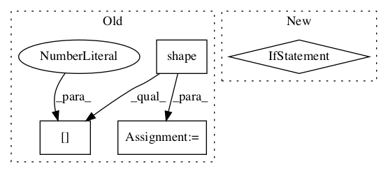

119e54a353513ff53d4f91b258dff2f8dbecbe5a,tgen/lexicalize.py,RNNLMFormSelect,_init_neural_network,#RNNLMFormSelect#,278

Before Change
self._cell = tf.contrib.rnn.BasicLSTMCell(self.emb_size)
if re.match(r"/[0-9]$", self.cell_type):
self._cell = tf.contrib.rnn.MultiRNNCell([self.cell] * int(self.cell_type[-1]))
self._initial_state = self._cell.zero_state(tf.shape(self._inputs)[0], tf.float32)
// embeddings
emb_cell = tf.contrib.rnn.EmbeddingWrapper(self._cell, self.vocab_size, self.emb_size)
// RNN encoder
After Change
// RNN encoder
inputs = [tf.squeeze(input_, [1])
for input_ in tf.split(axis=1, num_or_size_splits=self.max_sent_len, value=self._inputs)]
if self.bidi:
enc_outputs, _, _ = tf.nn.static_bidirectional_rnn(emb_cell, emb_cell, inputs, dtype=tf.float32)
enc_size = 2 * self.emb_size
else:
enc_outputs, _ = tf.nn.static_rnn(emb_cell, inputs, dtype=tf.float32)
enc_size = self.emb_size
// output layer
enc_output = tf.reshape(tf.concat(axis=1, values=enc_outputs), [-1, enc_size])
self._logits = (tf.matmul(enc_output,
tf.get_variable("W", [enc_size, self.vocab_size])) +
tf.get_variable("b", [self.vocab_size]))
In pattern: SUPERPATTERN
Frequency: 3
Non-data size: 4
Instances
Project Name: UFAL-DSG/tgen
Commit Name: 119e54a353513ff53d4f91b258dff2f8dbecbe5a
Time:
Author: null
File Name: tgen/lexicalize.py
Class Name: RNNLMFormSelect
Method Name: _init_neural_network
Project Name: asyml/texar
Commit Name: 830108b4b5f71f1a63cbd97c8131ba1aef4ac56a
Time:
Author: null
File Name: texar/utils/shapes.py
Class Name:
Method Name: mask_sequences
Project Name: asyml/texar
Commit Name: f55217e5fee88bc38e58e62e886f79e561c4d069
Time:
Author: null
File Name: texar/losses/losses_utils.py
Class Name:
Method Name: reduce_batch_time